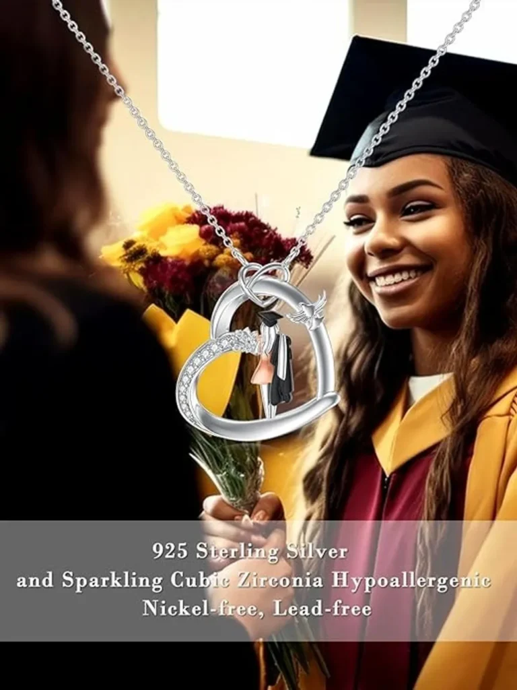

The Ultimate Guide to Graduation Gift Ideas: Creative and Thoughtful Presents for the Next Chapter
Are you looking for the perfect graduation gift that will make your loved one’s next chapter even more special? Look no further! In this ultimate guide, we have compiled a list of creative and thoughtful graduation gift ideas that are sure to impress.
Whether your graduate is heading off to college, starting a new job, or embarking on a new adventure, we have the perfect gift to celebrate their achievements and show them how proud you are. From personalized keepsakes and inspiring books to practical gadgets and stylish accessories, our curated selection covers a wide range of interests and budgets.
Our goal is to help you find a gift that is not only memorable but also reflects the graduate’s unique personality and aspirations. We understand that every graduate is different, and that’s why we have included a variety of options to suit various tastes and preferences.
So, get ready to be inspired and find the perfect graduation gift that will leave a lasting impression. Let’s make this milestone moment even more special with a thoughtful and creative present.
Why is choosing the right graduation gift important?
Choosing the right graduation gift is important because it is a way to celebrate and acknowledge the hard work and dedication that the graduate has put into achieving their goals. It is a way to show them that their accomplishments are recognized and appreciated. A well-thought-out gift can also serve as a reminder of their achievements and provide motivation as they embark on their next chapter.
The right graduation gift can also be a practical one, something that the graduate can use in their future endeavors. Whether it’s a new laptop for college, a professional briefcase for their first job, or a travel set for their upcoming adventures, a practical gift can help them start their next chapter on the right foot.
Lastly, choosing the right graduation gift is important because it is an opportunity to show your support and love for the graduate. It is a chance to let them know that you are proud of their accomplishments and excited to see what they will achieve in the future. A thoughtful and meaningful gift can strengthen the bond between you and the graduate and serve as a reminder of your relationship.
Traditional graduation gift ideas
Traditional graduation gift ideas are classics for a reason. They are timeless and always appreciated by graduates. Here are some traditional graduation gift ideas that are sure to make a lasting impression:
-
Watches: A stylish and classic watch is a perfect gift to mark this milestone moment. It symbolizes the graduate’s transition into the adult world and serves as a reminder of their achievements.
-
Jewelry: A piece of jewelry, such as a necklace or a bracelet, can be a meaningful gift to commemorate graduation. Personalize it with the graduate’s initials or birthstone to add a personal touch.
-
Pens and stationery: A set of high-quality pens and stationery is a practical and thoughtful gift for graduates. It will come in handy for taking notes, writing thank-you letters, and starting their professional journey.
These traditional graduation gift ideas are versatile and can be tailored to suit the graduate’s preferences and style. They are classic gifts that will stand the test of time and be cherished for years to come.

Personalized graduation gift ideas
When it comes to graduation gifts, adding a personal touch can make all the difference. Personalized gifts show that you have put thought and effort into choosing something unique and meaningful. Here are some personalized graduation gift ideas that are sure to make a lasting impression:
-
Engraved photo frame: Choose a stylish photo frame and have it engraved with the graduate’s name, graduation date, or a meaningful quote. Fill it with a memorable photo of the graduate to create a personalized keepsake.
-
Customized jewelry: Personalize a piece of jewelry with the graduate’s initials, birthstone, or a special message. It could be a necklace, a ring, or a bracelet that they can wear and cherish for years to come.
-
Monogrammed items: From towels and bags to keychains and wallets, monogrammed items are a popular choice for personalized graduation gifts. Choose the graduate’s initials or name and have it embroidered or engraved on the item of your choice.
These personalized graduation gift ideas are a meaningful way to show the graduate that you have taken the time to choose something unique and special just for them. They will appreciate the thought and effort that went into creating a personalized gift.
Practical graduation gift ideas
Practical graduation gifts are always appreciated as they can be put to good use in the graduate’s next chapter. Here are some practical graduation gift ideas that are both useful and thoughtful:
-
Laptop or tablet: A new laptop or tablet is a practical gift for graduates heading off to college or starting a new job. It will help them stay connected, complete assignments, and excel in their studies or work.
-
Professional attire: Help the graduate make a good impression with a set of professional attire. Whether it’s a tailored suit, a stylish dress, or a professional bag, a wardrobe upgrade will boost their confidence and help them dress for success.
-
Cooking essentials: For graduates moving into their own place, a set of cooking essentials is a practical gift that will come in handy. From pots and pans to utensils and appliances, these items will help them prepare delicious meals and feel at home in their new space.
These practical graduation gift ideas are not only useful but also thoughtful. They show that you have considered the graduate’s needs and are supporting them as they transition into the next phase of their life.
Technology and gadget graduation gift ideas
In today’s digital age, technology and gadgets have become essential tools for success. Here are some technology and gadget graduation gift ideas that are sure to impress:
-
Wireless headphones: A pair of high-quality wireless headphones is a must-have for any graduate. Whether they are commuting to work, studying at the library, or enjoying some downtime, wireless headphones will enhance their audio experience.
-
Smart home devices: Help the graduate create a smart and connected home with devices like smart speakers, smart thermostats, and smart lighting. These devices will make their life easier and more convenient.
-
Portable charger: A portable charger is a practical gift for graduates on the go. It will ensure that their devices never run out of battery, whether they are traveling, attending meetings, or exploring new places.
These technology and gadget graduation gift ideas are perfect for graduates who are tech-savvy or simply appreciate the convenience that technology offers. They are practical gifts that will enhance the graduate’s daily life and help them stay connected and productive.
Experiences and adventures as graduation gifts
Sometimes, the best gift is not a physical item but an experience or adventure that the graduate will remember for a lifetime. Here are some experiences and adventures that make great graduation gifts:
-
Travel vouchers: Treat the graduate to a travel voucher that they can use to explore a new destination or revisit a favorite place. Whether it’s a weekend getaway or a dream vacation, the gift of travel is always appreciated.
-
Concert or event tickets: Surprise the graduate with tickets to their favorite band’s concert or a sporting event they have always wanted to attend. It will create memories that will last long after the event is over.
-
Adventure activities: For the thrill-seeking graduate, consider gifting them an adventure activity like skydiving, bungee jumping, or scuba diving. It will give them an adrenaline rush and a unique experience to remember.
These experiences and adventures as graduation gifts go beyond material possessions and offer the graduate a chance to create memories and explore new horizons. They are gifts that will be cherished for a lifetime.
DIY graduation gift ideas
If you have a creative side and enjoy making things, DIY graduation gifts are a great option. They show that you have put time, effort, and love into creating something unique and special. Here are some DIY graduation gift ideas to inspire you:
-
Memory jar: Fill a jar with small notes, each containing a fond memory or inspirational quote. The graduate can pick one out each day and be reminded of the love and support they have.
-
Handmade scrapbook: Create a personalized scrapbook filled with photos, mementos, and messages from friends and family. It will be a cherished keepsake that captures the graduate’s journey.
-
Customized care package: Put together a care package tailored to the graduate’s interests and needs. Include their favorite snacks, books, and small items that will make them feel loved and supported.
These DIY graduation gift ideas are not only unique and personalized but also heartfelt. They show that you have taken the time to create something special for the graduate, and they will appreciate the thought and effort that went into it.
Budget-friendly graduation gift ideas
Gifts don’t have to break the bank to be meaningful. Here are some budget-friendly graduation gift ideas that are thoughtful and creative:
-
Handwritten letter: Write a heartfelt letter to the graduate, expressing your pride, love, and support. It is a simple yet meaningful gift that will be treasured for years to come.
-
DIY photo collage: Create a photo collage using printed photos and a poster board. Arrange the photos in a creative way, and include captions or messages to make it even more personalized.
-
Subscription service: Give the gift of a subscription service, such as a magazine, a streaming platform, or a beauty box. It will provide the graduate with entertainment, inspiration, or self-care treats.
These budget-friendly graduation gift ideas show that you can make a meaningful gesture without spending a fortune. They are thoughtful and creative gifts that will be appreciated by the graduate.
Graduation gift ideas for different interests and hobbies
Every graduate has different interests and hobbies, and finding a gift that aligns with their passions can make it even more special. Here are some graduation gift ideas for different interests and hobbies:
-
Book lover: If the graduate is a book lover, consider gifting them a collection of their favorite books or a gift card to a bookstore. You can also personalize a bookmark or a bookplate to go along with the gift.
-
Sports enthusiast: For graduates who love sports, consider gifting them sports equipment or apparel related to their favorite sport. You can also surprise them with tickets to a game or a sports-themed experience.
-
Artistic soul: If the graduate is artistic, consider gifting them art supplies, a sketchbook, or a painting set. You can also arrange a visit to an art museum or a workshop to inspire their creativity.
These graduation gift ideas for different interests and hobbies show that you have considered the graduate’s passions and have chosen something that aligns with their personality. They are gifts that will spark joy and encourage the graduate to pursue their interests.
Conclusion: Finding the perfect graduation gift
Finding the perfect graduation gift can be a daunting task, but with this ultimate guide, you now have a variety of creative and thoughtful ideas to choose from. Whether you opt for a traditional gift, a personalized keepsake, a practical gadget, an unforgettable experience, a handmade creation, a budget-friendly gesture, or something that aligns with the graduate’s interests and hobbies, the key is to choose something that is meaningful and reflects your love and support.
Remember, the most important thing is to celebrate the graduate’s achievements and show them how proud you are. Your thoughtful and creative graduation gift will not only make their next chapter even more special but also serve as a reminder of your love and support as they embark on their new journey. So go ahead and find the perfect graduation gift that will leave a lasting impression and make this milestone moment unforgettable.